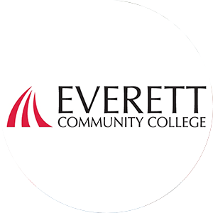
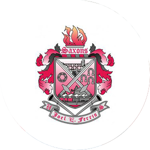
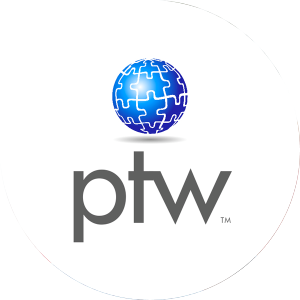
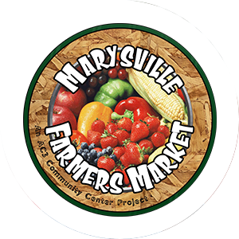
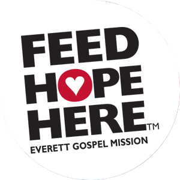

Education
 Floodgate Academy
Floodgate Academy
Coding Bootcamp
Seattle, WA
2017-Current

Associates of Technical Arts in Multimedia Web Design
Everett Community College
Everett, WA
2014
Everett Community College
Everett, WA
2014

High School Diploma
Joel E. Ferris High School
Spokane, WA
2014
Joel E. Ferris High School
Spokane, WA
2014
Experience

Pole To Win International
QA Tester
Lynnwood, WA
2017-Current
Conduct end to end testing for console and mobile gaming platforms. Must communicate issues, risks and complete test plans in a timely manner. Conduct root cause analysis against uncovered issues.
QA Tester
Lynnwood, WA
2017-Current
Conduct end to end testing for console and mobile gaming platforms. Must communicate issues, risks and complete test plans in a timely manner. Conduct root cause analysis against uncovered issues.

Farmer’s Market Mentorship Program
Market Mentee
Marysville, WA
2017
Develop small business skills that include money management, marketing, customer service and product presentation. Collect produce at co-op farm, clean goods to be sold, sort items for sale and price appropriately.
Market Mentee
Marysville, WA
2017
Develop small business skills that include money management, marketing, customer service and product presentation. Collect produce at co-op farm, clean goods to be sold, sort items for sale and price appropriately.

Technology Toolkit
Download Resume
Everett Gospel Mission
Pantry Volunteer
Everett, WA
2014-2017
Receive deliveries for Mission distribution. Unload truck deliveries, count and weigh goods received and recordkeeping of all goods received.
Pantry Volunteer
Everett, WA
2014-2017
Receive deliveries for Mission distribution. Unload truck deliveries, count and weigh goods received and recordkeeping of all goods received.